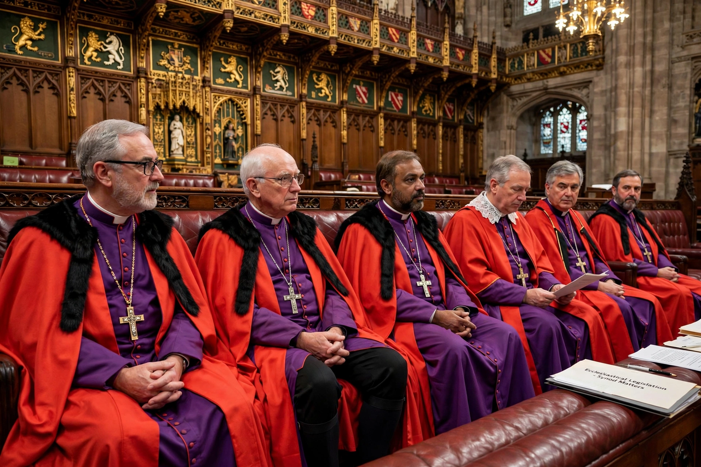

Lords Spiritual
From Wikipedia, the free encyclopedia

The Lords Spiritual are the bishops of the Church of England who sit in the House of Lords of the Parliament of the United Kingdom. Twenty-six bishops hold seats: the Archbishops of Canterbury and York, the Bishops of London, Durham and Winchester, and twenty-one others by seniority of consecration. They are the surviving remnant of the clergy's medieval presence in Parliament, and the United Kingdom is one of very few democracies with clerics sitting ex officio in the legislature.
History
Ecclesiastics — abbots and bishops — sat in the medieval English parliament from its origins, sometimes outnumbering lay lords. The English Reformation removed the abbots at the Dissolution of the Monasteries (1536–41), leaving the bishops. A queue system by seniority was established by the Bishopric of Manchester Act 1847 as new dioceses were created, capping the number at 26.
Role today
Lords Spiritual sit as independent members, not as a party bloc; they lead the House's daily prayers and speak particularly on ethical, educational and community matters — the Archbishop of Canterbury's interventions on welfare and debt have attracted wide attention. Since the Lords Spiritual (Women) Act 2015, newly consecrated women bishops take precedence in the seniority queue for ten years to accelerate their arrival; Rachel Treweek, Bishop of Gloucester, became the first female Lord Spiritual in 2015.
Reform debate
The bishops' presence is a recurring target in House of Lords reform debates: critics call it an anomaly privileging one church in a multifaith, largely secular society (and note that the Churches of Scotland and Wales and the Roman Catholic Church have no equivalent seats); defenders cite the bishops' regional roots and non-partisan voice. Successive reform proposals have suggested reducing or broadening the spiritual benches rather than abolishing them outright.